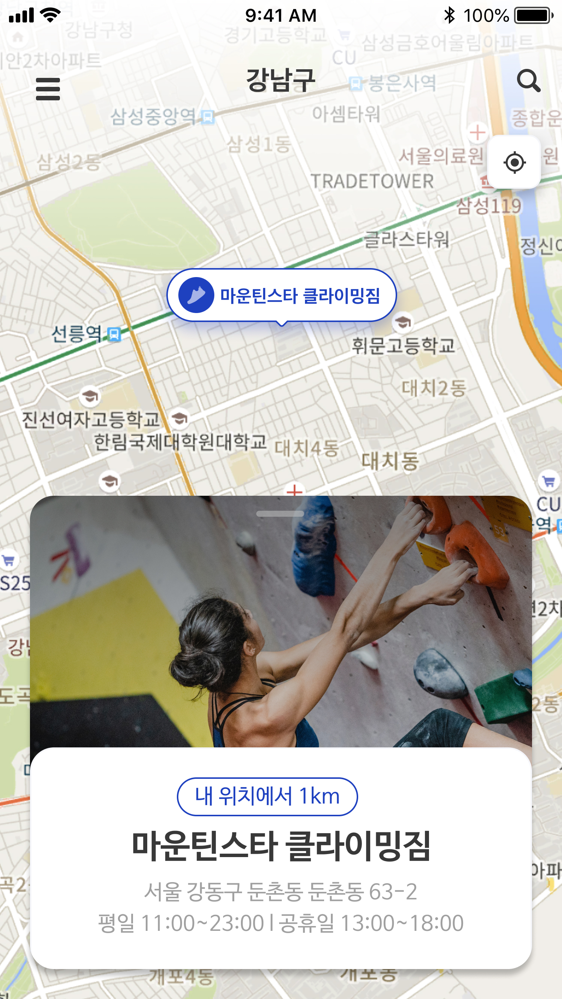

Feature 02 · Clarity Information
가기 전에 확인하고, 다녀온 후엔 기록으로



1키워드 검색
2운영 정보 확인
3리뷰 작성
FEATURE 02
·
CLARITY INFORMATION
흩어진 정보를
한 화면에 모은다
지인 추천, 블로그, 카카오톡에 흩어져 있던
클라이밍장 정보를 앱 하나로 해결한다.
Research Insight
인터뷰 참여자 4명 중 4명이 새 클라이밍장 정보를 지인 추천이나 블로그에 의존하고 있었다. 정보가 흩어져 있어 방문 전 확인이 번거롭다.
1
키워드·지역 검색
암장 이름 또는 지역으로 빠르게 원하는 클라이밍장을 찾는다
2
운영 시간·난이도·위치 한눈에
헤매던 정보를 상세 페이지 하나에서 모두 확인한다
3
다녀온 후 리뷰로 정보 공유
실제 방문 경험이 커뮤니티 정보로 쌓여 다음 방문자에게 전달된다